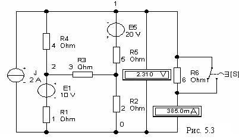

где N – номер записи фамилии студента в учебном журнале группы).
Задание 2. Собрать схему цепи (см. рис. 5.3) на рабочем поле программы EWB или программы MS8 Education (либо открыть файл Lr4.ewb при выполнении работы в среде EWB или файл Lr4.ms8 при работе в среде MS8SD только для определения тока в ветви 6) и установить параметры элементов:
где N – номер записи фамилии студента в учебном журнале группы).

Включить амперметр (режим DС и внутреннее сопротивление RА = 1 мОм) в заданную ветвь и вольтметр (режим DС и внутреннее сопротивление RV = 1 MОм) параллельно ветви (включая источник напряжения), в которой нужно определить ток. При этом полярность включения амперметра и вольтметра должна соответствовать выбранному направлению тока ветви. Подключить также ключ S параллельно резистору заданной ветви.
Запустить программу (щелкнуть на цифре 1 кнопки
 ) и записать в табл. 5.1 значение тока в заданной ветви схемы, которое не должно отличаться от расчётного значения более чем на 3…5%.
) и записать в табл. 5.1 значение тока в заданной ветви схемы, которое не должно отличаться от расчётного значения более чем на 3…5%.
Далее, разомкнуть ветвь (от зажима амперметра заданной ветви) или установить значение сопротивления в заданной ветви в GОм или МОм. Запустить программу и занести показание вольтметра (UX = EЭГ) в табл. 5.1.
Восстановить схему (подключить амперметр), а резистор этой ветви закоротить посредством ключа S. Запустить программу. Показание амперметра IК занести в табл. 5.1.
По данным измерений расcчитать и занести в табл. 5.1:
- внутреннее сопротивление эквивалентного генератора RЭГ = Ux/IK;
- ток Ik в заданной ветви с сопротивлением Rk
Ik = UX/(RЭГ + Rk).
Убедиться, что полученное значение тока Ik не отличается от измеренного значения тока в заданной ветви и от рассчитанного значения (с допустимой погрешностью не более 3…5%).